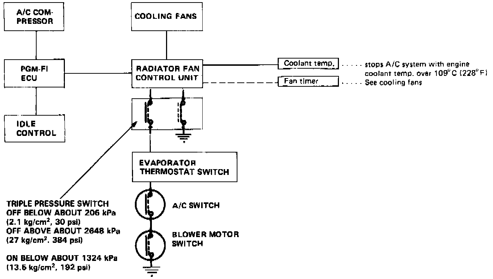
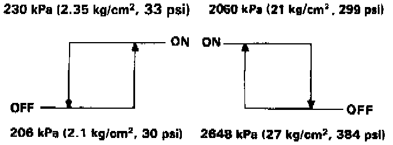

Air Conditioner
AIR CONDITIONER CONTROL SYSTEMAir conditioner control system consists of the A/C switch in the function control panel, A/C control unit, evaporator, dual pressure switch, radiator fan control unit, engine coolant temperature sensor, pressure switch, PGM-FI ECU, magnetic clutch, and the clutch relay,

- When the A/C switch and blower motor switch are ON, the A/C control unit sends a signal through the dual pressure switch to the radiator fan control unit. If the evaporator sensor temperature is over 4°C (39° F), the radiator fan control unit activates the cooling fans and sends a signal to the PGM-FI ECU. The ECU then increases engine idle speed and energizes the A/C compressor clutch.
- When the temperature at the evaporator drops below 3°C (37° F) the sensor signals the control unit to turn off the fans and compressor.
- If the refrigerant pressure becomes too high (due to blockage) or too low (due to leakage) the triple pressure switch sends a signal to the cooling fan control unit to prevent the A/C from operating.
Pressure Sensor:

- When the system pressure is high (due to heavy operation in high temperature), triple pressure switch is activated to run the cooling fans at a higher speed.
- If engine coolant temperature reaches 1O9°C (228° F) at the coolant temperature sensor, the A/C is shut off.